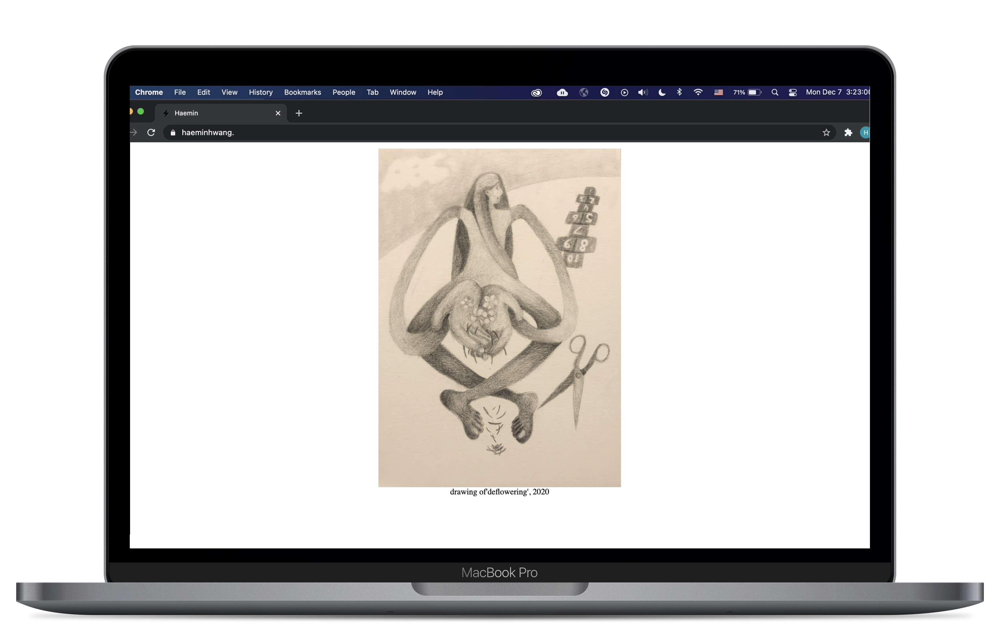

This was my very first time coding in HTML/CSS/JS, and my first experience with web design. I was introduced to HTML and CSS through a digital class, and I have been developing my skills independently through the internet and books.
I chose this as my first independent design project because I wanted to curate my work and show it to the audience through my vision. I also felt motivated to complete a personal project.
My main target audience was potential employers, including other artists, museums, and companies, and my main goal was to impress my target audience with an innovative aesthetic.
The main problem I ran into was creating a user friendly interface without resorting to a single-page scrolling site. One reason I wanted to deviate away from the modern design standard was to stand out, and also I believed my work warranted their own separate pages. Through this, I explored many ways to show my personality. Each icon links to a separate page of one of my paintings, and the "hae" acts as a home button while the "min" is an about page. The result is presented in the following screenshots. (Note: all photos were taken by myself)
I wanted to make the navigation explorative and up to the user. Although this may be considered poor design, I wanted my site to live as its own breathing entity by not falling in the column of single-page scroll design. In addition, I wanted to lure the user in by having the site be captivating and enigmatic enough to have people linger. So, I made everything simultaneously accessible and explorable.
I wanted the navigation to stay predominantly the same, but have more icons so the user can have some intuitive guess within their decision making. I expanded my website to showcase my work in code and design in addition to my fine arts work. I added different icons linking to different projects I've worked on, and also started teaching myself Javascript/JQuery for responsivity.
Audience: potential employers and those interested in my portfolio/work/resume. I want my site to act as a homepage where I can present all my work and skills in fine arts and design, and to come off as a well-rounded, fine arts student with a passion for design.
Concept: I want to portray myself as a student who has experience in art, code, and design. By creating a dynamic website that invites the user in, I want to establish an intimate relationship with the user. This site is a reflection of my personality and creativity, so it lies in the same realm as my creative scope. In addition, I want the work to be presented professionally to show that I would be a good fit for a company.
Design goals: my goal is to impress the user. And also to create a personal website that is inviting, not text-heavy but rather visually-grounded to convey my artistic abilities to complement my technical skills.
1) Layout: different pages for different projects and pieces: I decided that the content for each section warranted its own page. Each page has a fun way to get back to the homepage-- by clicking "hae" at the top left. This is fixed to the top of the page and turns blue when hovered on to indicate it is a functional button.
2) Tradeoffs include, but are not limited to, simplicity. Single-page scrolling is easier and more continuous than clicking endless links. Moreover, not everybody is a fan of a super immersive website without self-explanatory labels, especially if its purpose is to attract potential employers who will not spend much time on my site. However, I wanted to convey my personal taste into my design. As 2020 trends reverted back to the 1990s, I gave my website a raw, html aesthetic that complemented my skills as well as trends in real time.
3) Target audience needs: all information must be succinct and easily accessible. This is why I chose to navigate through icons because pictures speak a thousand words. I still believe the flow is logical.
4) Navigation: I chose a fixed "hae" that floats atop the page at all times. It turns blue when hovered on, indicating its purpose as a nav button.
5) Font: I chose a font (Times New Roman), that is legible and easily identifiable as a professional type.
After user testing, I changed the font to one that is much more legible and inviting. The consistency in kerning, space and weight of the font allows for the site to seem more modern and purposeful.
Navigation: After user testing, I included a fade in/out transition for each page to create more smoothness when navigating, and a scroll-to-top button with a smooth scroll effect for certain pages for better user interface (as you can see on this page).
Navigation: After user testing, I increased the size of the scroll-to-top button and its background/hover color to stand out from the pink background so as not to blend in with the background and potentially get lost.